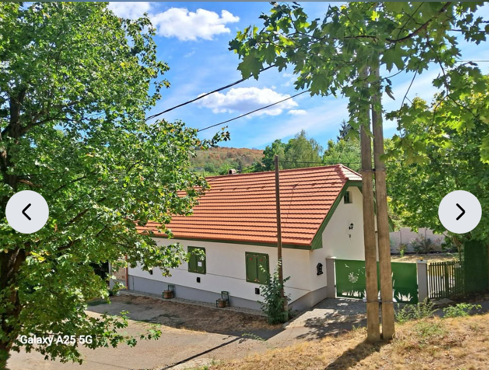
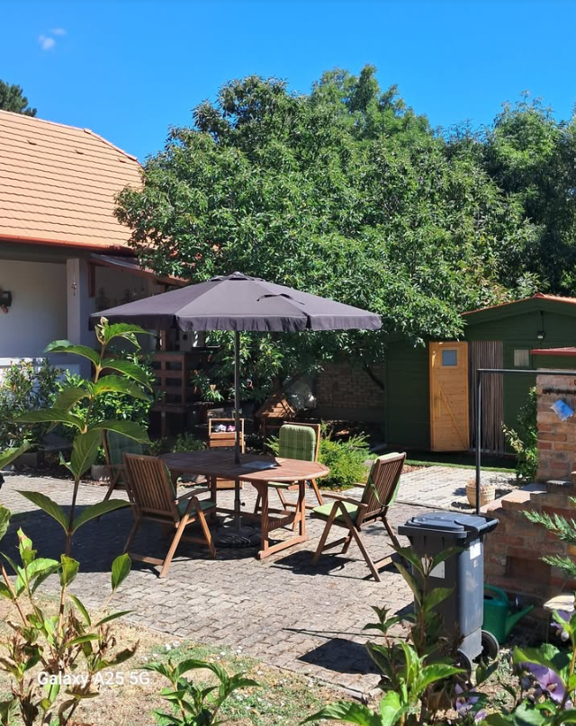

Kerékpárbérlés
Fedezzétek fel két keréken a környéket; kerékpárt bérelhettek a nálunk töltött napokra.
BERNECEBARÁTI · BÖRZSÖNY
Egy tornácos ház. Egy csörgedező patak.
És néhány nap, ami végre csak a tiéd.

EGY HELY, AHOVÁ JÓ MEGÉRKEZNI
A VadKörTe egy szeretettel felújított parasztház Bernecebarátiban, a falu templomának tövében. Zöld ablakok, régi bútorok, egy kályha melege és a kert mellett csörgedező patak. Itt a vidéki élet apró örömei adják a nap ritmusát.
A HÁZ, AMINEK LELKE VAN
Reggel kávé a tornácon. Délután egy könyv a kanapén. Este beszélgetés a kályha mellett. Nincs szükség nagy tervekre, hogy jól teljen a nap.
Otthonosan berendezveNappali, hálószoba, konyha-étkező és zuhanyzós fürdő. Természetes fa, meleg részletek, ismerős otthonosság.
Kint is jó maradniNövényekkel teli kert, tornác és fedett kiülő. A ház mellett patak csörgedezik; közvetlen szomszéd nincs.
Egy külön kis kuckóA kertben egy berendezett, 13 m²-es faház bújik meg, szaunával. Egy kirándulós nap meghitt lezárása.
APRÓ EXTRÁK A KIKAPCSOLÓDÁSHOZ
A pihenéshez néhány plusz lehetőséget is kérhettek. Részletekért és egyeztetésért keressetek minket.
Fedezzétek fel két keréken a környéket; kerékpárt bérelhettek a nálunk töltött napokra.
Merüljetek el a meleg vízben egy kirándulós nap után, és élvezzétek a nyugodt estét.
Reggelit is kérhettek előzetes egyeztetéssel, hogy a nap kényelmesen induljon.

a kedvenc évszakunk.VADREGÉNYES VAKÁCIÓ · VADKÖRTE VENDÉGHÁZ
Amikor a Börzsöny színt vált, jólesik kicsit kiszakadni a hétköznapokból. Bejárni egy erdei ösvényt, aztán hazatérni a kályha melegéhez. Vagy egyszerűen csak kiülni, és hallgatni a patakot.
NÁLUNK ILYEN
A ház valódi pillanatai. Kattints a képekre, és nézz körül.
BERNECEBARÁTI, SZÍVESEN
A Börzsöny nyugati lankái és az Ipoly között, régi utcák és zöld dombok találkozásánál. Bernecebaráti a Bernece- és a Kemence-patak völgyében bújik meg; fölöttük a Templom-hegy őrzi a falu történetét.
Bernecebaráti a térképenEgy séta a középkori eredetű Nagyboldogasszony-templom körül, aztán kanyargás a patakok között húzódó faluban.
Ismerd meg a falutRégi tárgyak, parasztházi terek és a helyi palóc élet emlékei. Indulás előtt érdemes egyeztetni a látogatást.
Helyi látnivalókA Kemencei Erdei Múzeumvasút az északi Börzsöny erdei közé visz. A napot az aktuális menetrendhez igazítsd.
Aktuális menetrendFedezzétek fel a Börzsöny erdeit egy hangulatos kisvasutazással. Indulás előtt nézzétek meg az aktuális menetrendet.
Menetrend és tudnivalókA 2,5 km-es tanösvény erdőn és sziklagyepeken vezet. Szánj rá 1,5–2 órát; a sziklás szakaszokhoz jó cipő kell.
A tanösvényrőlNyolc állomáson át a várromhoz. Történelem, erdei ösvény és kilátás: egy tartalmas kirándulás a környéken.
Nemzeti parki túrainfóKeress a felkészültségedhez és a napi időjáráshoz illő útvonalat. A legjobb túra után még jut idő hazatérni és megpihenni.
További tanösvényekJárjátok be a Bernecebaráti tanösvényt, amely a Börzsöny erdeiben Sisa Pista történetét és az Oszlai-árok vidékét mutatja be.
A tanösvény bemutatásaA BÖRZSÖNY ÉS AZ IPOLY TALÁLKOZÁSÁNÁL
Az Ipoly-völgy falvai, Kemence erdei és a Börzsöny ösvényei egy helyen. A kapott térképen könnyű elhelyezni Bernecebarátit a környéken.
A kék jelölés tájékozódást segítő útvonalvázlat. Indulás előtt válassz ellenőrzött túraútvonalat.
Megnyitom a térképenHASZNOS TUDNIVALÓK
A házirend szövegét hamarosan feltöltjük.
NÉHÁNY NAP, CSAK MAGATOKNAK
Jelölj ki néhány napot a naptárban. Összeállítjuk a pihenésed tervét, amit elmenthetsz az időpont-egyeztetéshez.
JÓ TUDNI
A főépületben nappali, hálószoba, konyha-étkező és WC-vel, zuhanyzóval felszerelt fürdőszoba található. A tornác végén fedett kiülő van; a kertben külön berendezett faház áll, szaunával.
A ház fűtését gázkonvektorok biztosítják, a nappaliban pedig fatüzelésű kályha is található. Az őszi estékhez otthonos, meleg terek tartoznak.
A ház mellett, a telken belül térkövezett felszíni parkoló található.
Az útitervkészítővel elmentheted a választott dátumokat. A foglalási kapcsolat indulásakor itt találod majd az időpont-egyeztetés módját. A terv elkészítése önmagában nem foglalás.